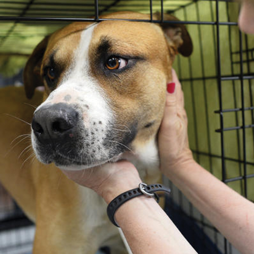

<div data-page="become_parent_disp" class="page">
    <div class="navbar header">
        <div class="navbar-inner">
            <div class="left"><a href="#" class="back link icon-only"><i class="material-icons color_8ac640">arrow_back</i></a></div>
            <div class="center title1" id="single-header"></div>
            
            <!-- <div class="right"><a href="#" class="open-panel link icon-only"><i class="icon icon-bars"></i></a></div> -->
        </div>
    </div>
    <div class="page-content padt0">
        <div class="content-block f_box" id="become_parent_disp_card">
            <div class="card facebook-card mrg0">
                <div class="card-content">
                    <div class="card-content-inner" style="padding: 0 !important">
                        
                        <div class="form_button">
                            <a href="#" class="link"><i class="material-icons">save</i></a>
                        </div>
                    </div>
                </div>
                <div class="card-header">
                    <h2 class="mrg0">Bosco</h2>
                    Breed: Bulldog, Age: 4 Years
                </div>
                <div class="no-border">
                    <div class="desc">
                        <h3 class="mrg0">About Pet:</h3>
                        Cute friendly dog looking for a family to host him forever. All vaxinations completed. Healthy dog.
                    </div>
                    <br><br>
                    <button class="button button-round button-raised button-big"><i class="material-icons">favorite_border</i>&nbsp;&nbsp;Adopt Pet</button>
                </div>
            </div>
        </div>
    </div>
</div>
</div>